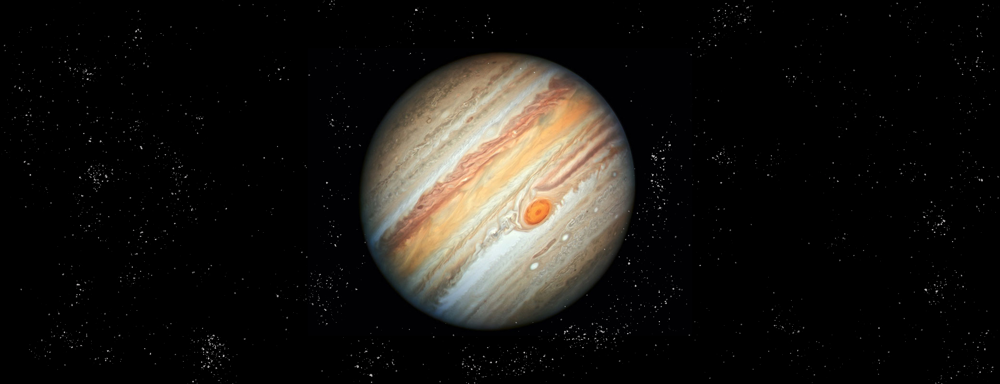
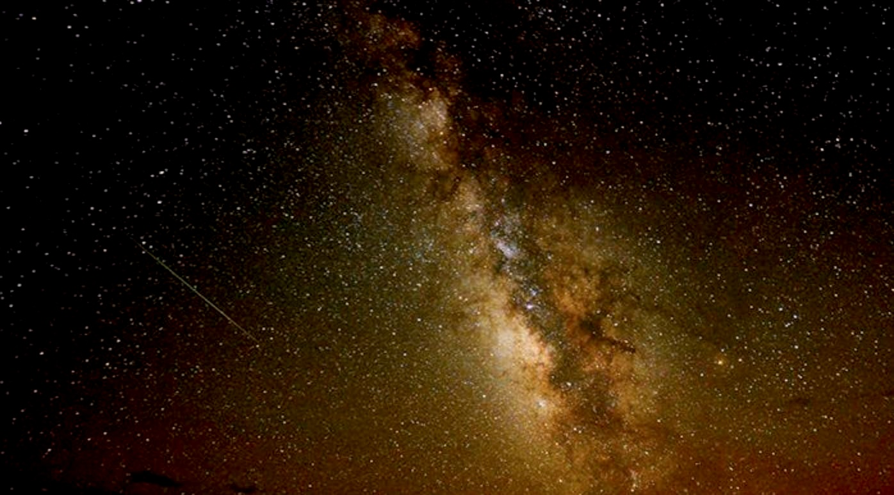

首页
太阳系
地球
月球
太阳
金星
水星
火星
土星
天王星
海王星
小行星世界
太阳系边缘
纵览太阳系
返回

木星｜JUPITER
木星是距离太阳第五近的行星，也是太阳系中体积最大的行星。
古代中国则称木星为岁星，取其绕行天球一周约为12年，与地支相同之故。
到西汉时期，《史记‧天官书》作者司马迁从实际观测发现岁星呈青色。
与“五行”学说联系在一起，正式把它命名为木星。
木星
深入探索
木星的 3D 模型，太阳系最大的行星
用鼠标拖动试试
Source: NASA Visualization Technology Applications and Development (VTAD)

质量：1.8982✕1027 kg
体积：1.4313×10^15km³（地球体积的1316倍）
与太阳的平均距离：7亿7800万千米
平均半径：71492 km
公转周期：11.862 个地球年